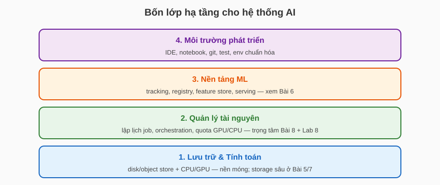
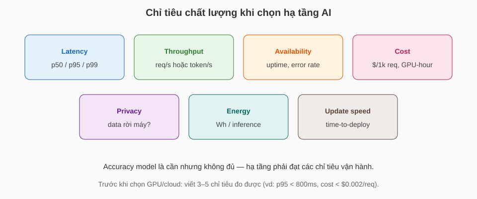
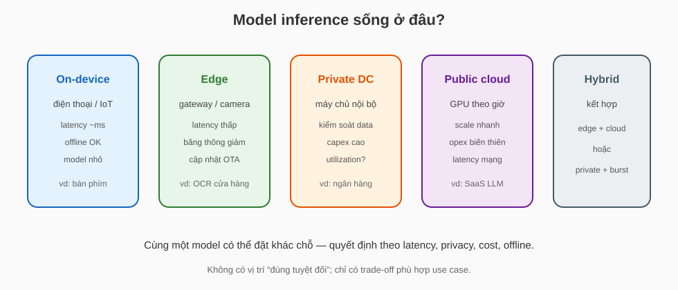
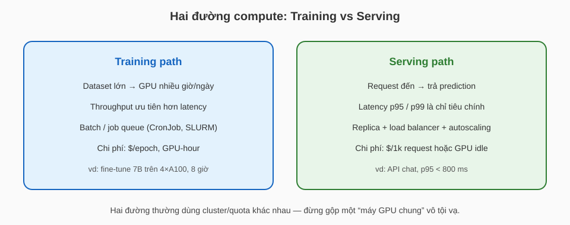
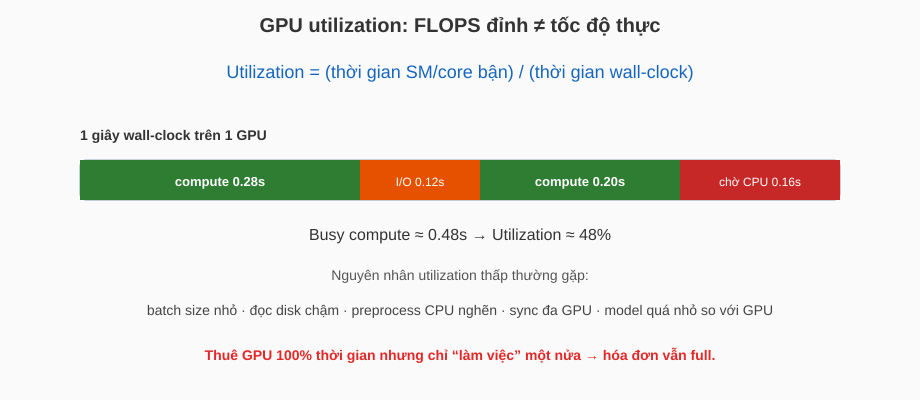
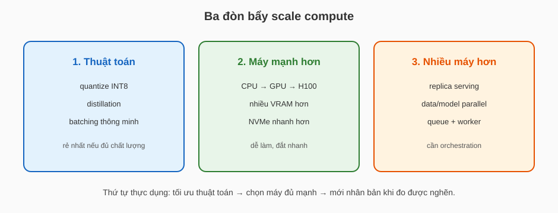
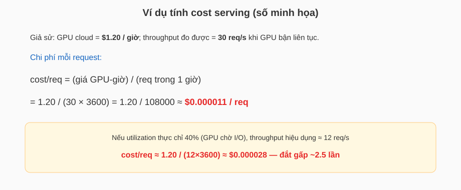
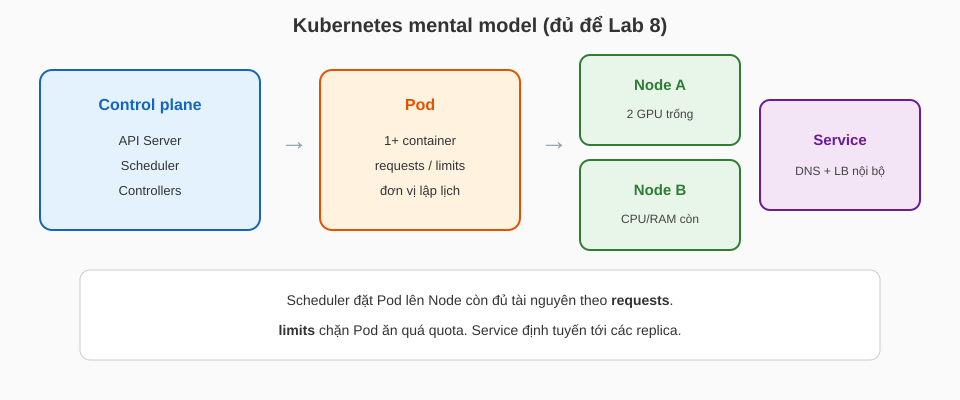
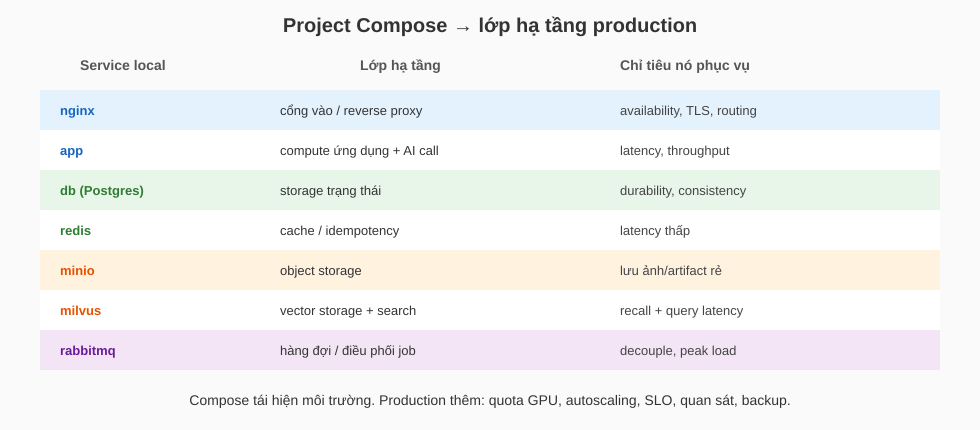

Kỹ nghệ hệ thống Trí tuệ nhân tạo
Bài 8: Cơ sở hạ tầng hệ thống TTNT
Trường ĐH Công nghệ – Đại học Quốc gia Hà Nội
Nội dung
- Bản đồ bốn lớp hạ tầng
- Chất lượng hệ thống & vị trí chạy model
- Hardware & compute path
- Dữ liệu & scale tối thiểu
- Đóng gói & điều phối tài nguyên
- Map project Compose → production
Storage sâu → Bài 5/7; ML platform/serving → Bài 6; Docker/K8s hands-on → Lab 7/8.
Mục tiêu buổi học
- Viết được 3–5 chỉ tiêu đo được (latency, cost, availability…) trước khi chọn công nghệ.
- Quyết định model chạy ở đâu (device / edge / on-prem / cloud / hybrid) và hardware nào, có lý do.
- Giải thích đường đi container → lập lịch/điều phối và map stack Compose của project sang production.
1.
Bản đồ bốn lớp
hạ tầng
Hạ tầng AI là gì?
- Định nghĩa làm việc: tập cơ sở (máy, lưu trữ, lập lịch, công cụ) để phát triển, huấn luyện, triển khai và vận hành hệ thống có model.
- Không phải “cài được Docker” = đã có hạ tầng; hạ tầng phải phục vụ workload cụ thể và chỉ tiêu đo được.
- Mỗi tổ chức cần mức khác nhau: notebook một máy ≠ cluster GPU + serving 24/7.
Bốn lớp (từ dưới lên)

Bài 8 tập trung lớp 1 (compute) và lớp 2 (điều phối); lớp 3 đã học ở Bài 6.
Nhu cầu theo quy mô
- Ad hoc: phân tích / POC → laptop + Python đủ.
- Vừa (phổ biến): vài model production, GB–TB/ngày → cần container, DB, queue, GPU thuê.
- Rất đặc thù: latency ms + độ tin cậy cực cao / PB dữ liệu → thường tự xây hạ tầng.

Đa số dự án môn học / startup nằm vùng “vừa” — dùng stack chuẩn hóa, không tự dựng cluster từ đầu.
Tự xây vs thuê / mua
| Lựa chọn | Khi nào hợp lý | Cái giá phải trả |
|---|---|---|
| Tự xây (on-prem / code nội bộ) | Yêu cầu riêng (privacy, latency, IP); usage GPU ổn định cao | Capex, đội vận hành, thời gian dựng |
| Thuê cloud / SaaS | Nhu cầu biến thiên; muốn lên nhanh; team nhỏ | Opex; vendor lock; data rời máy |
| Hybrid | Data nhạy cảm on-prem + burst train trên cloud | Phức tạp kết nối, hai bộ quy trình |
Câu hỏi nhanh
Cần lớp nào trước? Có cần tự dựng vector DB cluster không?
Gợi ý: lớp 1 (Postgres/MinIO/1 vector DB Compose) + đóng gói app; chưa cần nền tảng ML đầy đủ.
2.
Chất lượng hệ thống
& vị trí chạy model
Chỉ tiêu trước, công nghệ sau

Định nghĩa chỉ tiêu (đo được)
- Latency: thời gian từ nhận request đến trả đủ response. Báo cáo p50, p95, p99 (ms), không chỉ trung bình.
- Throughput: số request (hoặc token) xử lý được mỗi giây ở tải ổn định.
- Availability: tỉ lệ thời gian hệ thống trả đúng theo SLO, ví dụ \(99.9\%\) ≈ downtime tối đa ~43 phút/tháng.
- Cost: chi phí vận hành quy về đơn vị nghiệp vụ: \$/1k request, \$/GPU-hour, \$/GB lưu/tháng.
- Time-to-deploy: từ merge PR đến model/version mới nhận traffic.
Inference chỉ là một thành phần
- Hệ thống thật còn: API gateway, auth, DB, queue, storage file, UI, logging.
- Model chậm 50 ms nhưng DB chậm 400 ms → user vẫn thấy “AI chậm”.
- Đo latency end-to-end và tách từng hop (gateway → app → model → DB).
Thiết kế hạ tầng cho cả đường đi request, không chỉ cho file .pt.
Model sống ở đâu?

Checklist trước khi chọn vị trí
| Câu hỏi | Nếu trả lời… | Hướng nghiêng |
|---|---|---|
| Cần offline / mạng kém? | Có | On-device / edge |
| p95 latency < 100 ms? | Có | Edge hoặc on-prem gần user |
| Model > vài GB, cập nhật tuần? | Có | Server / cloud (OTA edge khó) |
| Data không được rời tổ chức? | Có | Private DC / VPC riêng |
| Tải đột biến, team nhỏ? | Có | Public cloud + autoscaling |
| Cần bảo vệ IP model? | Có | Server-side; hạn chế on-device |
Hai case khác profile
- Latency: < 30 ms trên máy
- Offline bắt buộc
- Model: quantized, < 50 MB
- → On-device
- File 5–60 phút; batch OK
- GPU lớn; cập nhật model tuần
- Cost theo phút audio
- → Cloud GPU + queue
Cùng “AI speech/text” nhưng vị trí chạy và hóa đơn hoàn toàn khác.
Câu hỏi nhanh
Chọn edge gateway hay gửi ảnh lên cloud? Nêu 2 rủi ro của lựa chọn kia.
3.
Hardware
& compute path
Tách training path và serving path

Đơn vị tính toán (compute unit)
- CPU: ít nhân mạnh, tốt cho preprocess, I/O, model nhỏ / tree models.
- GPU: hàng nghìn core song song; mạnh khi tensor lớn, batch lớn (DNN, embedding).
- Accelerator khác (TPU, NPU): tối ưu cho framework/workload hẹp.
Thông số cần đọc trên datasheet / cloud SKU:
- VRAM (GB) — model + KV cache + batch có vừa không?
- Memory bandwidth (GB/s) — thường nghẽn hơn FLOPS.
- FP16/BF16/INT8 throughput — phụ thuộc precision.
- PCIe / NVLink — tốc độ trao đổi đa GPU.
FLOPS đỉnh không dự đoán được tốc độ thực
- \(\mathrm{FLOPS}_{\text{peak}}\) = số phép toán dấu phẩy động lý thuyết mỗi giây.
- Thời gian bước thực tế còn phụ thuộc: đọc weight từ VRAM, kernel launch, sync, CPU prep.
Model nhỏ / batch nhỏ: \(T_{\text{memory}}\) và overhead chiếm tỉ lệ lớn → GPU “xịn” vẫn chậm.
GPU utilization

Công thức utilization & đo
\[ U = \frac{t_{\text{busy}}}{t_{\text{wall}}} \in [0,1] \]- Trên NVIDIA: xem nvidia-smi (SM util %, memory util %).
- SM util thấp + memory util cao: có thể đang bị nghẽn băng thông / batch quá lớn so với compute.
- SM util thấp + memory util thấp: thường thiếu việc (batch nhỏ, chờ data loader).
- Mục tiêu training thường \(U \ge 0.7\); serving có thể thấp hơn nếu tối ưu latency (batch=1).
Ba đòn bẩy scale

Cloud vs on-prem vs hybrid
| Cloud | On-prem | |
|---|---|---|
| Thời gian có máy | phút–giờ | tuần–tháng |
| Chi phí | opex theo giờ | capex + điện + người |
| Utilization | trả khi dùng (spot/reserved) | lỗ nếu máy idle |
| Data / compliance | phụ thuộc region & hợp đồng | kiểm soát vật lý |
| Scale đột biến | dễ | khó (mua thêm) |

Hybrid điển hình: data nhạy cảm on-prem; fine-tune / burst inference trên cloud.
IaaS / PaaS / SaaS trong AI
| Mức | Bạn quản | Ví dụ AI |
|---|---|---|
| IaaS | OS, runtime, scaling | VM + GPU, tự cài CUDA |
| PaaS | code/model, config | managed K8s, managed DB |
| SaaS | prompt / API call | API LLM thương mại |

Càng lên SaaS: lên nhanh hơn, kiểm soát runtime/model kém hơn, hóa đơn theo token/request.
Ví dụ tính cost serving

Công thức cost (serving GPU)
\[ C_{\text{req}} = \frac{P_{\text{GPU-hour}}}{Q \cdot 3600 \cdot U} \]- \(P_{\text{GPU-hour}}\): giá thuê GPU một giờ (\$).
- \(Q\): throughput đỉnh đo được (req/s) khi GPU bận liên tục.
- \(U\): utilization trung bình thực tế (\(0 < U \le 1\)).
Tăng \(Q\) (batching) hoặc \(U\) (bớt chờ I/O) giảm \(C_{\text{req}}\) mạnh hơn việc “đổi GPU đắt hơn” nếu chưa nghẽn compute.
Ràng buộc edge
- Điện năng / nhiệt: giới hạn TDP → model phải nhỏ hoặc NPU chuyên dụng.
- Kích thước model: flash + RAM; thường cần quantize (INT8/INT4).
- Cập nhật: OTA phải an toàn; rollback khi model mới lỗi.
- Telemetry: có gửi log/ảnh lên cloud không? (privacy + băng thông).
Edge thắng latency/offline; thua khả năng model lớn và dễ cập nhật so với cloud.
Câu hỏi nhanh
Chọn: (A) 1× GPU cloud nước ngoài, (B) 1× GPU on-prem, (C) CPU on-prem + model 3B quantized.
Nêu một chỉ tiêu khiến bạn loại một phương án.
4.
Dữ liệu
& scale tối thiểu
Bốn loại dữ liệu → bốn profile hạ tầng
| Loại | Ví dụ | Storage | Compute |
|---|---|---|---|
| Training | dataset, checkpoint | object store / NFS nhanh | GPU batch, giờ–ngày |
| Input | request user, ảnh upload | tạm / object | inference latency thấp |
| Telemetry | log, feedback, drift | append-heavy | batch ETL định kỳ |
| Models | artifact, embedding index | versioned store | load vào RAM/VRAM |
Đừng để training dataset và log telemetry tranh cùng một ổ chậm.
Batch vs online trên đường compute
- Online: mỗi request → prediction ngay; chỉ tiêu p95; cần replica nóng.
- Batch: chạy theo lịch trên tập lớn; chỉ tiêu throughput & deadline job (ví dụ 06:00 xong).
- Nhiều hệ kết hợp: ban đêm batch cập nhật feature/embedding; ban ngày online đọc kết quả đã sẵn.
Chi tiết serving/API contract → Bài 6; ở đây chỉ chọn kiểu compute.
Khi nào cần “thêm máy”?
- p95 tăng khi QPS tăng → thêm replica serving (horizontal).
- Một máy không chứa nổi model/data → shard hoặc model parallel.
- Spike ngắn → queue (RabbitMQ) + worker; trả 202 + poll kết quả.
- Chưa đo đã mua thêm GPU = đoán mò.
Lambda architecture, parameter server — đọc thêm khi làm phân tán quy mô lớn.
5.
Đóng gói
& điều phối tài nguyên
Vấn đề: “chạy được trên máy tôi”
- Khác phiên bản CUDA / Python / driver → model load lỗi.
- Notebook: thứ tự cell, state ẩn → khó tái hiện.
- Cần một đơn vị đóng gói mang code + dependency + lệnh chạy.

Chuẩn hóa môi trường trước khi tối ưu model — nếu không, bug “môi trường” đội lốt bug “AI”.
Container = đơn vị đóng gói
- Image: filesystem + metadata + lệnh mặc định (bất biến sau build).
- Container: process chạy từ image + cấu hình runtime (env, volume, port).
- Secret / URL DB: đưa qua .env, không bake vào image.
- Hands-on build/push → Lab 7.

Compose local vs cluster production
| Docker Compose | Kubernetes | |
|---|---|---|
| Mục tiêu | tái hiện stack trên 1 máy | lập lịch trên nhiều node |
| Scale | thủ công / ít service | replica, HPA |
| Self-heal | restart policy cơ bản | controller thay pod chết |
| GPU quota | gắn device đơn giản | request/limit + device plugin |
| Phù hợp | dev, BTL, demo | prod nhiều node |
Lập lịch vs điều phối
- Lập lịch (scheduling): chọn máy nào / khi nào chạy một đơn vị công việc (pod/job) theo tài nguyên còn trống.
- Điều phối (orchestration): mô tả luồng nhiều bước (DAG): bước A xong mới B; retry; song song.
- Ví dụ: K8s scheduler đặt training pod lên node còn GPU; Airflow/CronJob quyết định pipeline “embed → index → evaluate” chạy lúc nào.
Hai việc khác nhau; tool có thể làm cả hai nhưng khái niệm phải tách.
Kubernetes: mental model

requests / limits — công thức tư duy
- requests: lượng tài nguyên scheduler giữ chỗ khi đặt pod.
- limits: trần sử dụng; vượt CPU → throttle; vượt memory → có thể OOMKill.
resources:
requests:
cpu: "500m"
memory: "2Gi"
nvidia.com/gpu: 1
limits:
cpu: "2"
memory: "8Gi"
nvidia.com/gpu: 1Thiếu limits: một job train có thể chiếm hết GPU/RAM node → pod serving chung node bị đói.
Autoscaling, restart, cập nhật dần
- Replica: \(N\) pod giống nhau sau Service → tăng throughput, chịu lỗi 1 pod.
- HPA (ý tưởng): tăng \(N\) khi CPU/GPU util hoặc QPS vượt ngưỡng.
- Rolling update: thay pod dần; giữ một phần bản cũ nhận traffic.
- Restart policy: process chết → tạo lại pod (self-heal mức cơ bản).
Chi tiết lệnh/YAML → Lab 8; ở đây nắm vì sao cần các cơ chế này.
SLO gắn với hạ tầng
| SLO ví dụ | Hạ tầng phải làm gì |
|---|---|
| p95 latency API < 800 ms | đủ replica; model/hardware phù hợp; không chung GPU với train |
| Availability 99.5% | health check; multi-replica; restart; tránh single node |
| Deploy model mới < 30 phút | image sẵn; rolling update; registry artifact |
| Job batch xong trước 06:00 | quota GPU; ưu tiên queue; alert khi backlog |
Ví dụ SLO 99.5% → error budget 0.5% thời gian; hết budget thì dừng deploy mạo hiểm.
Cluster HPC / SLURM
- Môi trường nghiên cứu/HPC: hàng đợi job GPU theo partition, time limit, account.
- Khác K8s: tối ưu batch scientific hơn là microservice 24/7.
- Cùng ý: không ai chiếm GPU vô hạn — mọi job khai báo tài nguyên.
Câu hỏi nhanh
Scheduler còn đặt được train không? Serving đang chạy có thể bị ảnh hưởng thế nào?
6.
Map project Compose
→ production
Stack BTL → lớp hạ tầng

Compose đủ để học gì?
- Đã học được: đóng gói image; nối service bằng hostname; env; volume; healthcheck.
- Chưa phải production đủ: không có scheduler đa node, HPA, rolling có chiến lược, network policy, secret manager, backup tự động.
- Đường đi thực tế: Compose (BTL) → thêm quan sát/SLO → khi tải/nhiều máy thì Lab 8 / K8s.
Điểm cộng project: tận dụng đúng Redis/MinIO/Milvus/RabbitMQ — mỗi cái gắn một chỉ tiêu, không “cắm cho đủ”.
Ví dụ gắn chỉ tiêu vào service
| Use case | Service | Chỉ tiêu cụ thể |
|---|---|---|
| Tránh gọi AI trùng ticket | Redis | cache hit; khóa idempotency TTL 24h |
| Lưu ảnh sản phẩm | MinIO | object tồn tại sau restart; URL nội bộ |
| Tìm biên bản tương tự | Milvus | top-k trong < 100 ms trên 10k vector |
| Job AI chạy nền | RabbitMQ | queue depth < 100; consumer ack đúng |
7.
Checklist
& điểm chốt
Checklist quyết định hạ tầng
- 3–5 chỉ tiêu đo được (p95, QPS, cost/req, availability, time-to-deploy) là gì?
- Model chạy device / edge / on-prem / cloud / hybrid — vì sao?
- Training và serving có tách path/quota không?
- VRAM / precision / batch có khớp SKU GPU không?
- Utilization đo được bao nhiêu? Nghẽn ở compute, memory hay I/O?
- Đóng gói bằng image chưa? Secret có nằm ngoài image không?
- Cần scheduler đa node chưa, hay Compose vẫn đủ?
- Mỗi service trong stack phục vụ chỉ tiêu nào?
Tổng kết
- Chọn hạ tầng theo chỉ tiêu đo được, không theo danh sách tool.
- Vị trí chạy model = trade-off latency, privacy, cost, offline, cập nhật.
- FLOPS đỉnh ≠ tốc độ thực; theo dõi utilization và cost/req.
- Container chuẩn hóa môi trường; K8s thêm lập lịch, quota, replica trên nhiều máy.
- Compose của project là bản thu nhỏ — production thêm SLO, scale, quan sát.
Bài tập
- Chọn 1 use case (RAG nội bộ / OCR quầy / chatbot 100 user).
- Viết 3 SLO cụ thể (có số).
- Chọn vị trí chạy model + 1 SKU compute (CPU hoặc GPU) và giải thích bằng checklist.
- Phác thảo: Compose đủ hay cần K8s? Liệt kê 4 service và chỉ tiêu từng service.
Tham khảo
- Stanford CS329S — Hardware & infrastructure
- CMU 17-445 Machine Learning in Production — deployment, scale, operations
- Chip Huyen — Designing Machine Learning Systems, chương Infrastructure and Tooling
- Lab 7 (Docker), Lab 8 (Kubernetes), Bài 5–7 trong môn học